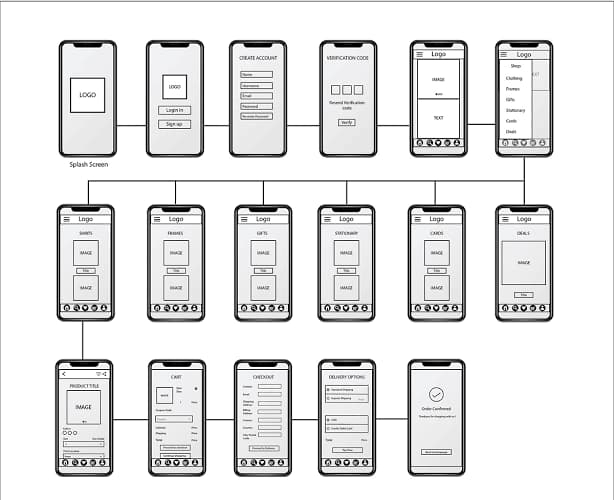
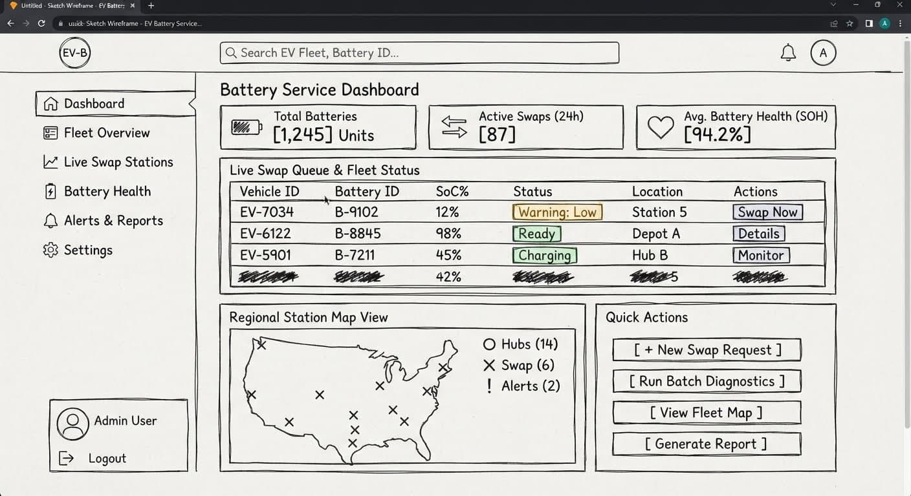

Site Name
Site Name:Ba3-as-a-Service.org
Reasoning:Battery as a Service (BaaS) is a sustainable model where customers use batteries through a service plan, including charging, swapping, and maintenance, rather than owning the battery outright.
Optional Domain:Ba3Service.org
Site Purpose
[Describe the main purpose of your site, the services or information provided, and what value it offers to visitors.]
Scenarios
- [Scenario 1: Where can I find a charge and swap station near my location?]
- [Scenario 2: What type of batteries do you charge and/or swap?]
Color Schema
Primary Color (#2E5A44): Used for headers, navigation backgrounds, and primary buttons.
Secondary Color (#F4A261): Used for accent links, hover states, and highlights.
Background Color (#FAFAFA): Used for page background for readability.
Typography
Heading Font: Montserrat (sans-serif) — Used for all section headings (h1, h2, h3).
Body Font: Roboto (sans-serif) — Used for paragraphs, list items, and general body text.
Wireframes
Mobile Layout

